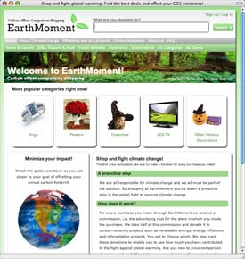

You've probably heard these guilt-inducing buzzwords by now:carbon footprint and carbon offset. 'What is thismiraculous means by which I can reduce my personal assault onPlanet Earth?' you might be thinking. 'Can I actually offset allthe carbon dioxide emissions I'm responsible for?' you're saying toyourself. Well, it's actually pretty easy and affordable. Take meto your carbon offset leader!
A carbon offset is something you buy. It's a voluntaryinvestment in an activity that leads to the reduction ofEarth-warming carbon dioxide (CO2) in our atmosphere. You canchoose to spend anywhere from $5 to $5 million on offsets, and theproject benefitting from your donation is usually up to you.
The most popular types of carbon offsets are those that planttrees (reforestation), support activities thathelp us use less fossil-fueled power (energy efficiency,conservation), or invest in power systems that don't relyon our dwindling fossil fuel supplies (renewableenergy). Some offset programs also invest in technologiesthat help prevent methane ? another potent nasty that heats up ourlives ? from entering the atmosphere (methanecapture).
The following organizations sell carbon offsets directly toconsumers, and feature handy carbon calculators to help youdetermine your environmental footprint. All are certified by anindependent agency that makes sure your dollars go where theyshould. (Learn more about thegreen-e certificationprogram.)
And here are a couple of other innovative ways to rack up carbonoffsets:
Carbon offsets have proved somewhat controversial to hard-coregreenies. The idea of buying global warming indulgences justdoesn't sit well with those who advocate lifestyle changes as theanswer to our climate catastrophe. But others argue that they arean easy way for people to make a difference and help drive marketdemand for green power and other industries that are working tostem the tide of climate change before it's too late. What do youthink? Are you enlightened? Get on your soapbox, vent, opine, orjust contribute rational thoughts to a positive dialogue by usingthe comments section link to comment area below.
|
 Our sister site, Earth Moment, lets you shop all your favorite online retailers, and purchases carbon offsets on your behalf ? at no extra charge to you. |
|
|